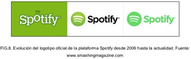
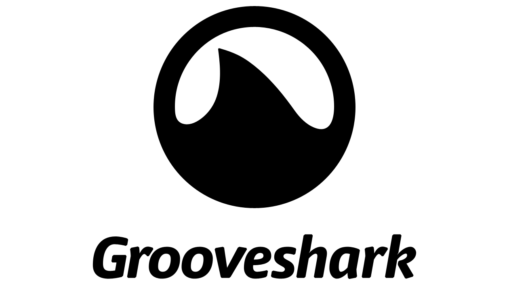
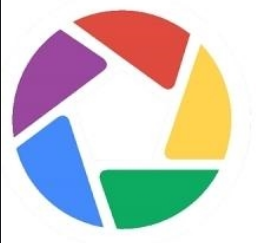
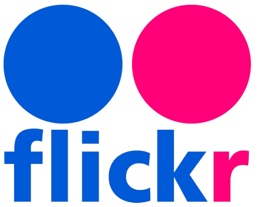

OBJETIVO
Mostrar las plataformas digitales y qué comprende cada una para la aplicación correcta en el proyecto final.
PLATAFORMAS DIGITALES
Hoy en día se tiene a la disposición una variedad de plataformas digitales, estas han sido categorizadas en función de su tipología como servicios de blogging, de vídeo, de audio, de fotografía, mensajería (instantánea y móvil), gestión de contenidos en la nube, marcadores sociales y otras herramientas colaborativas.
1. PLATAFORMAS DE BLOGGIN
Una de las herramientas 2.0 que se ha manifestado más útil para la creación de contenidos propios, su actualización frecuente y la generación de una comunidad activa de seguidores es el blog.
Esta tipología de contenido web vivió una fuerte expansión a comienzo de siglo gracias a la popularización de servicios blogging intuitivos y fáciles de utilizar por los usuarios tipo. Desde entonces, el fenómeno blog no ha cesado de expandirse.
Frente a la proliferación de blogs personales a modo de diario online, de la primera década del siglo XX, en el contexto actual se ha producido una cierta «especialización» de la blogosfera. Hoy es habitual la creación de una bitácora personal relativa a aficiones, como por ejemplo los blogs de moda que se han convertido en marcadores de tendencias en la red, o a perspectivas profesionales como los cientos de blogs vinculados al marketing online, a herramientas web etc. Asimismo, sus posibilidades para la creación colaborativa los ha convertido en herramientas estrella para el periodismo ciudadano, los movimientos sociales, etc.
Más allá de su fácil utilización para la creación y disposición de contenidos online, los blogs se posicionan muy bien en la red dada su constante actualización. De hecho, esta continua publicación de contenido se impone en los motores de búsqueda sobre otro tipo de factores.
En lo que se refiere al tipo de contenido vehiculado por esta tipología de herramientas 2.0, es preciso destacar que pese a que su contenido habitual es textual e hipertextual los blogs permiten albergar otro tipo de archivos multimedia de una forma sencilla.
Las funcionalidades que ofrecen las plataformas de creación de blogs son muy similares entre sí: personalización de diseño, posibilidad de comentarios, hipervínculo a otros contenidos online u otros blogs, listado etiquetado y clasificación de contenidos, posibilidades de sindicación vía RSS (Really Simple Sindication) o Atom, compartibilidad de estos contenidos en redes sociales etc.
Blogger
Esta plataforma de creación de blogs es gratuita y permite autoalojar el contenido (no hace falta la instalación de un servidor). De hecho, su principal limitación respecto a otras plataformas de blogging es que Blogger solamente permite la versión autoalojada de los contenidos, con las dificultades que esto implica para la creación de una url más personalizada.
No obstante, su pertenencia a Google logra un mejor posicionamiento de los contenidos generados a través de esta plataforma de blogging.
Wordpress
Wordpres constituye en la actualidad el primer motor de webs en el ámbito global. Prácticamente uno de cada cinco sitios creados en el mundo se realiza con esta plataforma. Entre los motivos de esta expansión se encuentran la facilidad de uso, la personalización del diseño y contenido (con un enorme abanico de plantillas creadas por miles de usuarios), y la posibilidad de una versión gratuita autoalojada o la descarga de su código para subir la web a un servidor propio.
Otra de las potencialidades de esta herramienta es que cuenta con una amplia comunidad de desarrolladores que lleva a que las funcionalidades de esta plataforma se vayan incrementando día a día. Lo que nació como un sistema de blog, hoy puede albergar desde tiendas en línea hasta plataformas de gestión de contenidos educativos.
Tumblr
Tumblr es una plataforma de microblogging que se encuentra en pleno auge, lo que la ha llevado a superar a Wordpress en número de blogs (contenido autoalojado). Las claves de su éxito son el combinar la potencia de su principal competidor (Wordpress) con la sencillez y capacidad social de Twitter.
De hecho esta plataforma permite la publicación de contenidos con mucha facilidad, así como su compartibilidad, integrándose a la perfección con otras plataformas sociales como Instagram, Facebook y Twitter.
Posterous
Esta plataforma de microblogging es tan versátil como Tumblr, funcional y con una estética muy agradable. Su principal característica es su facilidad de publicación a través del envío de contenidos por correo electrónico.
Al margen de las potencialidades previstas de forma automática por cada plataforma, los complementos para añadir nuevas funcionalidades a estos blogs son tan numerosos como su propia comunidad de desarrolladores y se encuentran en constante expansión.

2. PLATAFORMAS DE VIDEO
Youtube
Es la principal plataforma de gestión de contenidos audiovisuales con más de mil millones de usuarios mensuales.
Creado en 2005 este servicio web que depende de Google desde 2006, ha incrementado la capacidad de su repositorio al tiempo que sus contenidos crecían exponencialmente. Hoy se calcula que cada minuto que pasa Youtube alberga cien horas de nuevos contenidos audiovisuales.
Esta plataforma audiovisual permite subir contenido, restringir su visualización, organizar los vídeos en listas de reproducción, seguir lo que publican otros usuarios, etc. Asimismo, su material audiovisual se integra con facilidad en las redes sociales y permite su incorporación, como contenido incrustado, en cualquier sitio web. Unas potencialidades que han incrementado el reconocimiento de dicha plataforma así como la shareability de sus contenidos.
 Vimeo
Vimeo
Aunque es menos conocido que Youtube, este servicio web cuenta con una mejor reputación entre los profesionales del entorno multimedia dado que permite una mejor calidad (incorporó HD antes que su competidora, y estadísticas de visualización de contenidos).
Al igual que Youtube permite la integración de contenidos en otras plataformas así como un sistema de suscripción

3. PLATAFORMAS DE AUDIO
Aunque con una menor penetración que sus homónimas de vídeo, las plataformas de contenidos sonoros se han hecho un lugar entre las aplicaciones de los dispositivos de miles de usuarios en todo el mundo.
Estas plataformas presentan funcionalidades heterogéneas, funcionan como repositorios para contenidos propios como Soundcloud, pasando por plataformas como Grooveshark o Spotify que permiten la creación de playlist infinitas de fácil socialización (de fácil compartibilidad en redes sociales).
Spotify
En el año 2006, el sueco Daniel Ek junto a Martin Lorentzon, cofundaron la compañía Spotify en Estocolmo, pero debido a ciertos problemas con las licencias de las canciones mantuvieron dos años de negociaciones con las discográficas para poder operar en varios países, así que decidieron comenzar por operar en Europa y expandirse progresivamente con los años (Pastor, 2019). Finalmente, el 7 de octubre de 2008, Spotify sale al mercado como una plataforma concebida para escuchar música a través del ordenador. Además, para acceder a la versión gratuita, era necesario tener una invitación; si no era el caso, había que suscribirse a la versión de pago. Un año después, lanzaron la aplicación para smartphones debido a que el mercado estaba en auge (Valera, 2019). Hoy en día es una de las App de música más pagadas y cuenta con secciones de podcast y streaming.

Plataforma de Apple Music
iTunes Music Store, una tienda digital con apenas 200 000 archivos que revoluciona la industria y la forma de consumir y adquirir nueva música. Durante su primera década, la tienda brindó ventas sólidas, llegando en el año 2013 a conseguir el récord de 25 millones de canciones vendidas. Sin embargo, al mismo tiempo, los servicios de música en streaming como Spotify estaban ganando terreno.
Por tanto, la ITunes Store, considerada la tienda digital más grande e importante del mundo, comienza a perder terreno en 2014 con un 15 % de pérdidas en ventas de música, algo que no pasó desapercibido para la compañía, pues decidió comprar ese mismo año Beats Electronics por 3000 millones de dólares, adquiriendo así un servicio de música en streaming llamado Beats Music. Este se convierte, junto a ITunes, en la base de Apple Music, marcando así los primeros pasos para proporcionar un gran servicio de transmisión de música (Gutiérrez, 2015).
Soundcloud
Soundcloud es una aplicación web orientada al mundo musical y del sonido. Ofrece una atractiva interfaz para mostrar obras musicales u otro tipo de documentos sonoros, y varias maneras de compartir y consumir contenidos creados por otros autores.
Esta herramienta, además, permite incrustar sus contenidos de audio en otras plataformas en línea así como vincularlos con otras redes sociales.
Grooveshark
Grooveshark es una plataforma web que basa su potencial en un potente motor de búsqueda de contenidos musicales. Su algoritmo de recomendación ofrece sugerencias a los usuarios en función de las canciones o listas de reproducción consumidas recientemente.
Sus características sociales se han incrementado en los últimos meses con la incorporación de una nueva posibilidad: la creación de un canal individual que permite al usuario subir nuevos contenidos, importarlos o grabarlos desde el propio equipo informático.
Podcasting
Por podcasting se entiende la distribución de archivos multimedia a través de un sistema de redifusión (generalmente RSS) que permite a otros usuarios suscribirse a los contenidos seleccionados.
Precisamente el éxito del podcasting radica en que esta herramienta actúa como una push tecnhology más que como una pull tecnology. Es decir siempre que dependa del mismo feed las actualizaciones de los contenidos de interés serán descargadas automáticamente desde el servidor de internet al ordenador; una vez allí el usuario solamente debe clicar sobre el mismo para escucharlo o descargarlo en un dispositivo móvil. Una automatización que facilita el acceso y consumo de los contenidos.
Aunque en un inicio los podcast se consideraron la revolución de la «radio amateur» hoy se utiliza para el acceso a contenidos de medios sonoros y audiovisuales on demand.

4. PLATAFORMAS DE IMÁGENES
 Picasa
Picassa nace como una compañía de fotografía digital que compra Google y reconvierte en su visualizador, organizador y editor de fotografías en línea. Posee un motor de búsqueda integrado, al igual que sus competidores.
 Flickr
Flickr es uno de los servicios de fotografía más populares en el mundo, que dominó hasta hace poco el mercado de estos servicios online. Su capacidad de organización y distribución de fotografías ha sido la principal baza para convertirse en el servicio número uno del mundo. E inclusive ha experimentado con posibilidades de recopilación de fotografías a través de un buscador semántico (trazando en una pantalla líneas con colores para acceder a imágenes semejantes).
No obstante, en los últimos tiempos, ha perdido usuarios ante la proliferación nuevas aplicaciones 2.0 para imágenes.
Yahoo, la empresa propietaria, está trabajando para relanzar el servicio con nuevas funcionalidades de visualización y un terabyte de espacio gratuito para todas sus cuentas.
Les invito a que explore todos los recursos y herramientas disponibles en este tema, serán útiles para la compresión de la temática y la elaboración de las actividades evaluativas.